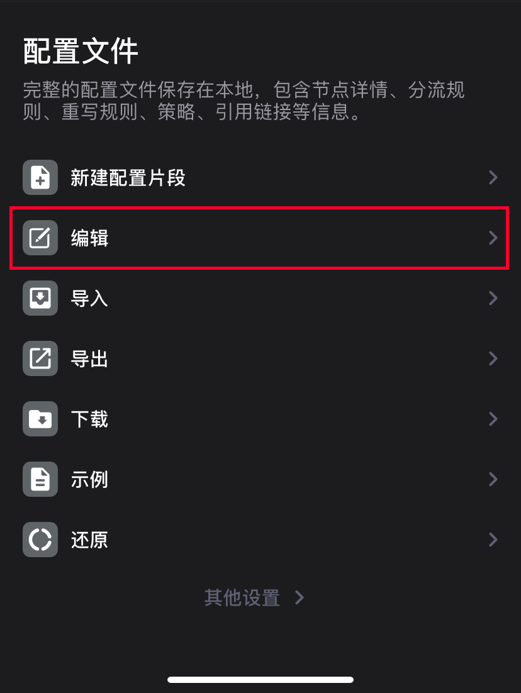
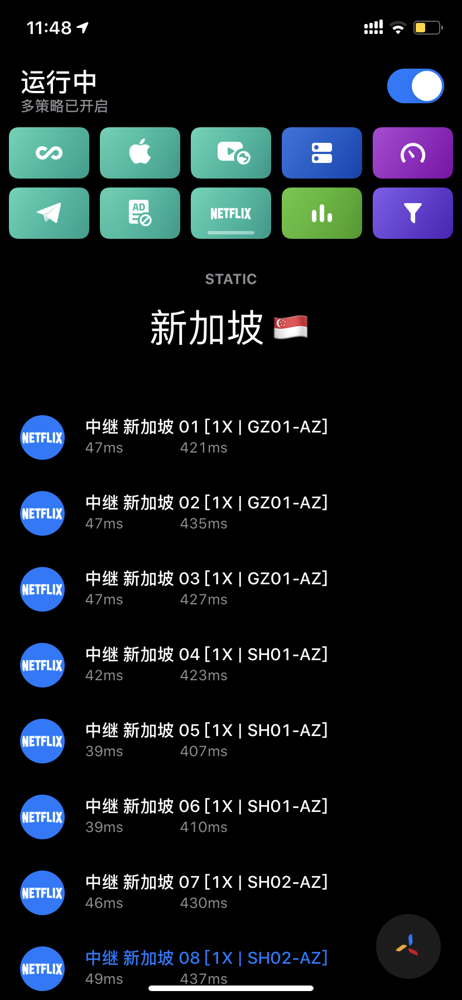
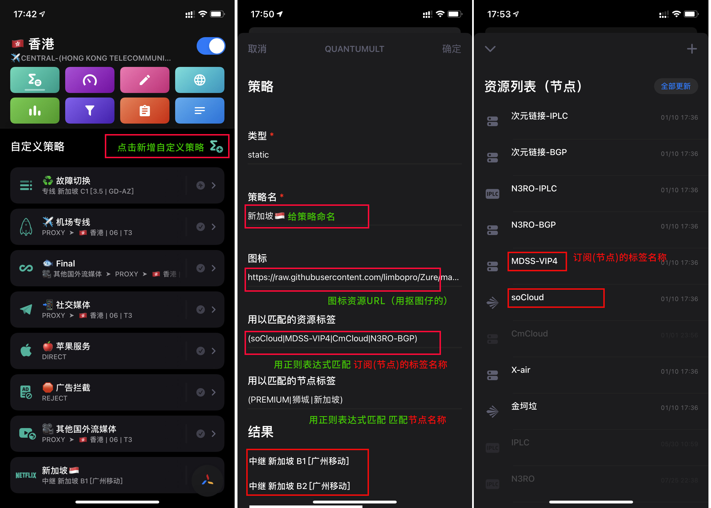
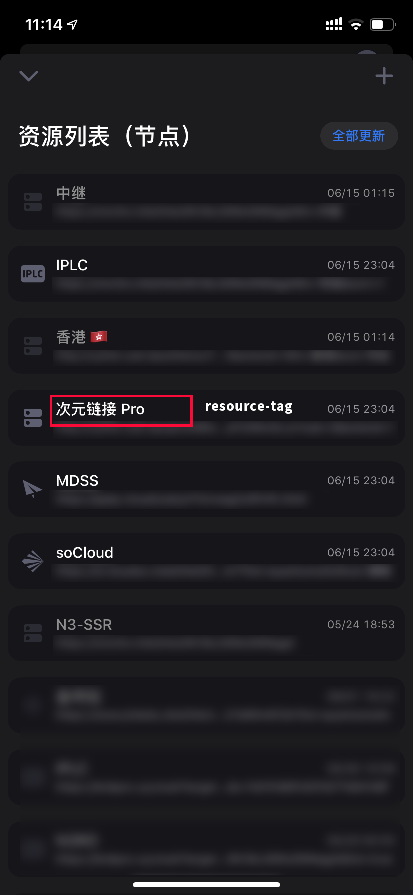
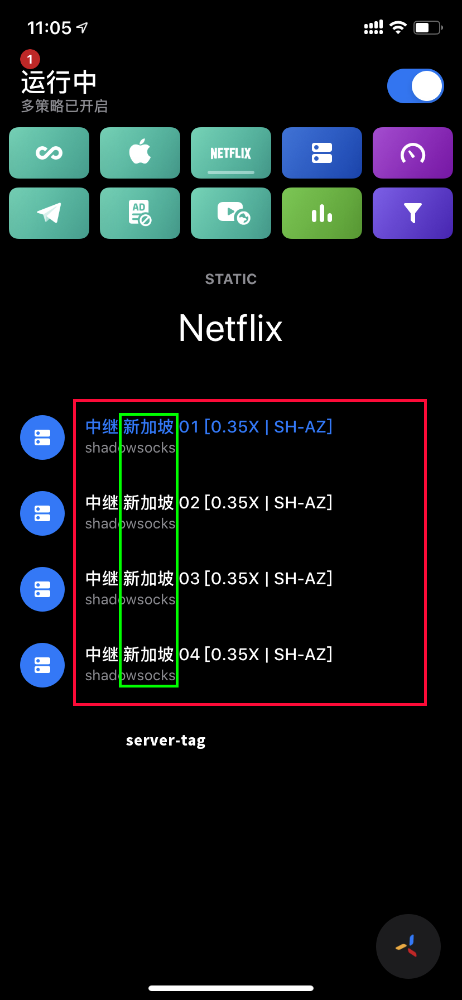
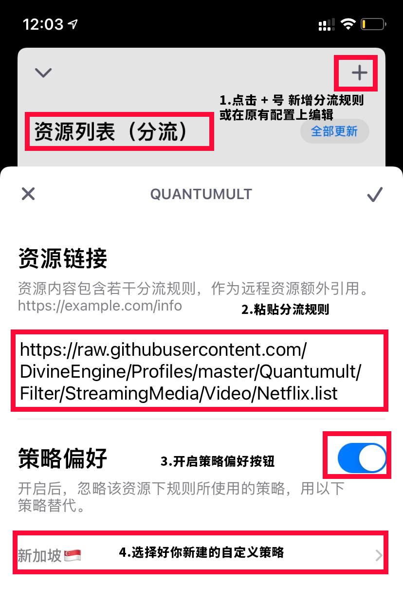

via 春潮频道；
本文隶属于 实用工具 分类，点击分类名称可以查看更多相关文章；
I. 主理人说
或许用带图形用户界面的软件用的太久了，我们已经习惯了 点击某个按钮以开启某个功能，或许我们该做出一些改变，那就从学习使用资源解析器开始吧；还在用订阅转换API过滤节点吗？是时候了，转战香喷喷的本地资源解析器（特指Quantumult X，Surge暂不支持，菜）；
II. 解决隐私隐忧
如大家所知，并不是每个人都能够自建订阅转换API的，但用第三方的API多少会有隐私顾虑；（本地）资源解析器正好可以完美的解决这一点；
III. 关于资源解析器
项目仓库：https://github.com/KOP-XIAO/QuantumultX / https://github.com/KOP-XIAO/QuantumultX/blob/master/Scripts/resource-parser.js ； 由S大维护；
资源解析器介绍
版本 Quantumult X (v1.0.8-build253) 后，作者引入了资源解析器；相比于常见的在线 API，资源解析器的最大优势：
1.完全本地解析，无暴露服务器风险；
2.无需 URLencode 步骤，直接填入原始订阅链接即可，更可直接使用中文参数(空格除外)；
3.将各类服务器订阅解析成 Quantumult X 格式；
4.支持 V2RayN/SSR/SS/Trojan/QuanX/Surge/https 订阅；
5.超多个性化参数；
IV. 解析器的配置及使用方法

0.配置解析器；复制resource_parser_url=https://raw.githubusercontent.com/KOP-XIAO/QuantumultX/master/Scripts/resource-parser.js；
1.打开Quantumult X主界面，点击右下角 三菱按钮 - 下滑找到 配置文件 - 点击编辑， 在Quantumult X 配置文件中找到[general] 部分，并在[general]下方粘贴：（粘贴后效果如下）
[general]
resource_parser_url=https://raw.githubusercontent.com/KOP-XIAO/QuantumultX/master/Scripts/resource-parser.js2.粘贴好后，点击右上角完成保存；
3.开启解析器；现在，进入Quantumult X主界面，点击右下角 三菱按钮 - 找到 节点模块，点击引用（订阅），你应该就可以看到你的机场订阅了；点击任意订阅，如下图所示，选择开启 [资源解析器]；

如果你的机场有很多节点，那么现在开始你就可以对这些节点进行一些骚操作了；例如给节点重命名，强制开启或关闭UDP/TFO、对节点进行排序，给节点加国旗emoji等等；
5.在你的机场订阅链接后面加上#井号及解析参数，如本示例中的 #in=香港：即代表从当前订阅链接中过滤出所有包含香港二字节点；（记住多个参数一起使用要用&符号连接，如#in=香港+台湾&emoji=1&tfo=1，即代表筛选出包含香港和台湾的节点，并为这些筛选出来的节点加上国旗emoji，然后开启tfo；#in=香港+台湾&emoji=1&tfo=1中的&符号便是用来连接各个解析器参数的；在这里in、emoji、tfo都是解析器参数，参数后面接=号，=号后接具体的参数值，这些参数值中有些是固定的几个可选项例如0、1、2，具有明确意义的数值用以代表开启、关闭；其他一些参数值则涉及正则表达式，可参考本文末尾为大家提供的一些关于正则表达式的学习资料进行进一步学习；可以说正则表达式贯穿了Quantumult X使用的始终；）
V. 解析器的各类参数及使用方法（完整）
在 订阅链接 后加 "#" 使用, 不同参数用 "&" 连接
“你的订阅连接”#emoji=1&tfo=1&in=香港+台湾1.)原始订阅链接后加 "#" , 不同参数用 "&" 连接:
你的订阅地址#in=香港+台湾&emoji=1&tfo=1
2.)"节点" 订阅 ➠ 参数说明:
info=1, 开启通知提示机场 ✈️ 流量信息（如有）;
emoji=1,2 或 -1, 为添加/删除节点名中的地区 emoji 旗帜
国行设备请用 emoji=2
3.)udp=1或-1, tfo=1或-1, tls13=1, 分别强制开启 udp-relay/fast-open/tls13; -1代表强制关闭；
此参数对源类型为 QuanX/Surge 的链接无效
cert=0, 强制"tls-verification=false" 跳过证书验证;
延迟测试只有第一个数据时, 可尝试此参数
4.)in, out, 分别为 保留/删除 节点, 多参数用 "+" 连接(逻辑"或"), 逻辑"与"用 "." 连接, 可直接用中文, 空格用"%20"代替;如 "in=香港.IPLC.04+台湾&out=香港%20BGP"
5.)rename 重命名、删除字段, "旧名@新名", "删除字段☠️", 以及 "前缀@", "@后缀",用 "+" 连接多个参数;
如 "rename=香港@HK+[SS]@[email protected][1X]+倍率☠️"
6.)sort=1, -1, 排序参数, 分别根据节点名 正序/逆序 排列;
via https://github.com/KOP-XIAO/QuantumultX/blob/master/Scripts/resource-parser.js
反馈
有bug请反馈 @Shawn_KOP_bot
更新请关注 tg 频道 https://t.me/QuanX_API
Github 对应仓库 https://github.com/KOP-XIAO/QuantumultX
VI. 其他玩法
节点过滤、生成策略组等进阶玩法
本高阶玩法特别适合经常观看 Netflix 的同学，因为Netflix的一些政策：他们在观看Netflix的时候需要固定使用某个地域的节点，例如香港，例如新加坡；
现在在 [server_remote] 配置项中使用 as-policy=static 参数，即可将订阅节点列表转换成策略组，例如我将某机场节点中包含新加坡的节点过滤出来并自动生成名为新加坡的策略组（名称跟随tag），届时只需在[分流]-[引用] - Netflix 分流的[策略偏好]选该策略组即可；
详细步骤
1.[配置文件]-[编辑] 找到 [server_remote] 配置项；
[server_remote]
你的订阅地址#in=新加坡&out=专线, tag=新加坡, as-policy=static, img-url=https://raw.githubusercontent.com/limbopro/Zure/master/IconSet/Netflix_Letter.png, update-interval=86400, opt-parser=true, enabled=true
[server_remote] 配置项中的 参数说明：
as-policy=static，将节点作为策略组；
img-url=，设置策略组图标，后面跟图标地址；
update-interval=，节点订阅更新周期；
opt-parser=，是否开启资源解析器；
enabled=，启用或禁用该节点订阅；
使用QuantumultX 内置 regex 参数以及正则表达式筛选节点并生成策略组

先从资源列表（节点）中过滤出想要的订阅，然后在从该订阅过滤出想要的节点；图标可查看本文末尾处；
效果与 as-policy 雷同，将需要的节点过滤出来并生成策略组（策略组即包含节点/direct/proxy/reject/等一系列其他策略的混搭嵌套组合），届时只需在[分流]-[引用] - Netflix 分流的[策略偏好]选该策略组即可；更友好更灵活，且支持策略组排序；
配置详细步骤
文字版如下
打开 Quantumult X - [配置文件]-[编辑] ，找到 [policy] - ，参考如下写法：
[policy]
static=Netflix, resource-tag-regex=(次元)|(MDSS), server-tag-regex=(新加坡)|(狮城), img-url=https://raw.githubusercontent.com/limbopro/Zure/master/IconSet/Netflix_Letter.png
参数说明：（Quantumult X 最新版本）
resource-tag-regex=，=号后面跟正则表达式，即使用正则从你所有的订阅链接的标签中筛选符合条件的订阅链接；

如需筛选多个订阅链接，可使用|：resource-tag-regex=次元|MDSS
server-tag-regex=，=号后面跟正则表达式，即从上面已经筛选出来的订阅链接里再筛选出你想要的节点；

你的机场订阅肯定包含了很多很多节点，使用正则从中筛选出想要的节点；
如需筛选多个名称的节点，可使用|：server-tag-regex=新加坡|香港
上述例子中，即从我所有的订阅链接中筛选出标签中含有次元的订阅链接，然后再从次元的节点中筛选出包含新加坡的节点；
常用正则表达筛选公式：
(A).*(B) 节点名既有 A又有 B
(A)|(B) 节点名有 A 或者 B
^((?!A).)*$ 节点名不含有 A
(?!.*(A)).*(B) 节点名不含有 A，同时含有 B正则表达式其他语法可参考：正则表达式 - 语法；
正则表达式30分钟入门教程：正则表达式30分钟入门教程；
理解正则表达式：正则表达式到底是什么东西？
在编写处理字符串的程序或网页时，经常会有查找符合某些复杂规则的字符串的需要。正则表达式就是用于描述这些规则的工具。换句话说，正则表达式就是记录文本规则的代码。
很可能你使用过Windows/Dos下用于文件查找的通配符(wildcard)，也就是和?。如果你想查找某个目录下的所有的Word文档的话，你会搜索.doc。在这里，*会被解释成任意的字符串。和通配符类似，正则表达式也是用来进行文本匹配的工具，只不过比起通配符，它能更精确地描述你的需求——当然，代价就是更复杂——比如你可以编写一个正则表达式，用来查找所有以0开头，后面跟着2-3个数字，然后是一个连字号“-”，最后是7或8位数字的字符串(像010-12345678或0376-7654321)。
via 正则表达式30分钟入门教程;
分流规则绑定自定义策略
QX - 分流 - 引用 - 点击想要设置的 分流规则 如 Netflix 的分流规则 https://raw.githubusercontent.com/DivineEngine/Profiles/master/Quantumult/Filter/StreamingMedia/Video/Netflix.list ，为其开启并选择策略，选择刚刚新建的自定义策略；

VII. Tips
img-url= 后面的图标可以使用抠图仔的github项目：https://github.com/Koolson/Qure；
VIII. 鸣谢
感谢 Shawn https://github.com/KOP-XIAO/QuantumultX
感谢 抠图仔 https://github.com/Koolson/Qure
感谢 Quantumult X https://t.me/QuanXApp
版权属于：毒奶
联系我们：https://limbopro.com/6.html
毒奶搜索：https://limbopro.com/search.html
毒奶导航：https://limbopro.com/daohang/index.html本文链接：https://limbopro.com/archives/11131.html
本文采用 CC BY-NC-SA 4.0 许可协议，转载或引用本文时请遵守许可协议，注明出处、不得用于商业用途！